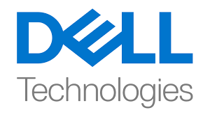

Dell is an American company that develops , sells , repairs , and supports computers and related products and services and is owned by its parent company of Dell Technologies . Founded in 1984 by Michael Dell , the company is one of the largest technology corporations in the world , employing more than 165,000 people in the U.S. and around the world.
Dell sells personal computers (PCs) , servers , data storage devices , network switches , software , computer peripherals , HDTVs , cameras , printers and electronics built by other manufacturers. The company is well known for its innovations in supply chain management and electronic commerce , particularly its direct-sales model and its "build-to-order" or "configure to order" approach to manufacturing — delivering individual PCs configured to customer specifications.
| Headquaters |
Round Rock , Texas , United States |
| Founder |
Michael S. Dell |
| Founded |
1 February 1984 , Austin , Texas , United States |
| CEO |
Michael S. Dell |
| Subsidiaries |
Dell EMC , Alienware , Dell Corp ltd , MORE |
| Parent organization |
Dell Technologies |
| Website |
Go to dell official Website |
Eligibility Criteria For Freshers
- Must and should have complete their B.E./ B.Tech/ M.E./ M.Tech/ MCA/ MCA/ B.Sc or any other Graduation or Post Graduation Qualification is eligible to apply for Dell Recruitment 2021 with a minimum of 60% marks in aggregate.
- Must be a good team player.
- Shouldn't have any backlogs.
Jobs Provided By Dell
- Professor / Associate Professor / Assistant Professor in CSE (Experience Required : 0-5yrs , salary expected : Not disclosed)
- CTIO Senior Software Engineer (Experience Required : 0-5yrs , salary expected : Not disclosed)
- Associate Consultant - Multi-Cloud (VMware suite , Microsoft Azure , AWS) (Experience Required : 0-2yrs , salary expected : Not disclosed)
- Exclusive Walk in for Customer Support Collections Mortgage Intern (Experience Required : 0-8yrs , salary expected : Not disclosed)